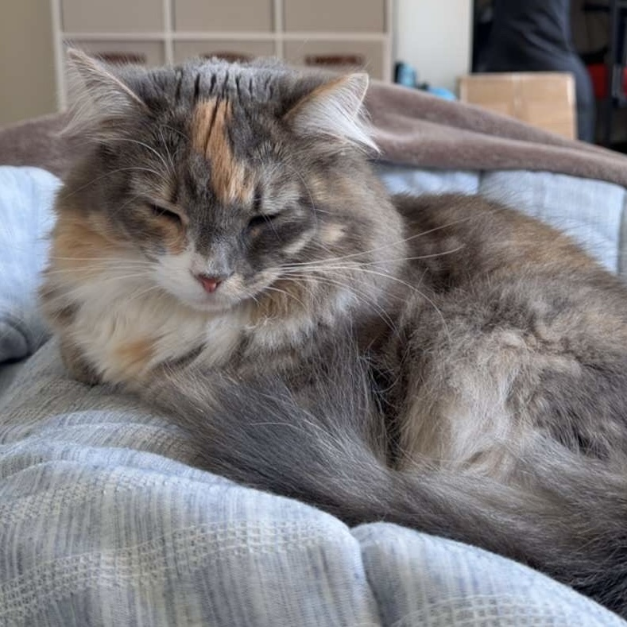
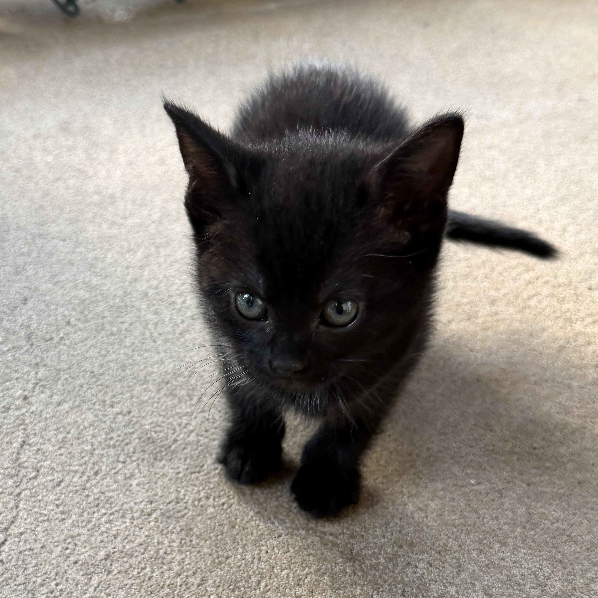

Too cute to keep, too expensive to feed. Meet the cats who are unfortunately being sacrificed for the greater good of my college education.
 |
Nickname: Freggie Breed: Domestic Longhair / Calico Freya is 1.5 years old and is incredibly soft and cuddly, on her own terms of course. She will demand food even if she just ate, loves stealing underwear, and makes funny clicking noises whenever she sees a light. She’s a little weird, a little chaotic, and absolutely adorable. |
 |
Nickname: Finn / Bean Breed: Domestic Shorthair Finnick is 4 months old and already has plenty of personality. He loves biting feet, chasing his tail in the shower, and rearranging bath mats whenever he gets the chance. He spends every night burrowed under the covers, where he somehow manages to take up more space than he actually needs. Warning: He may not realize he exists... |
DM me on Instagram @catsforcollege to purchase!